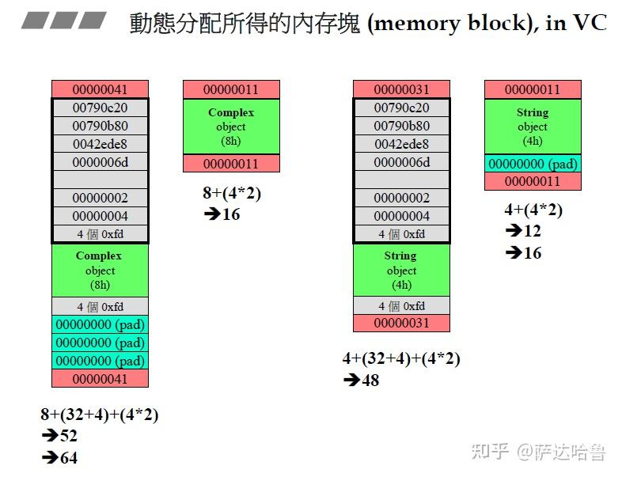
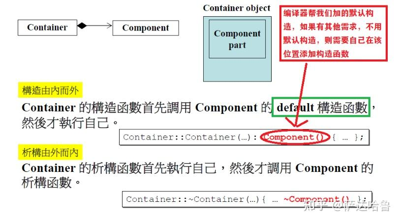
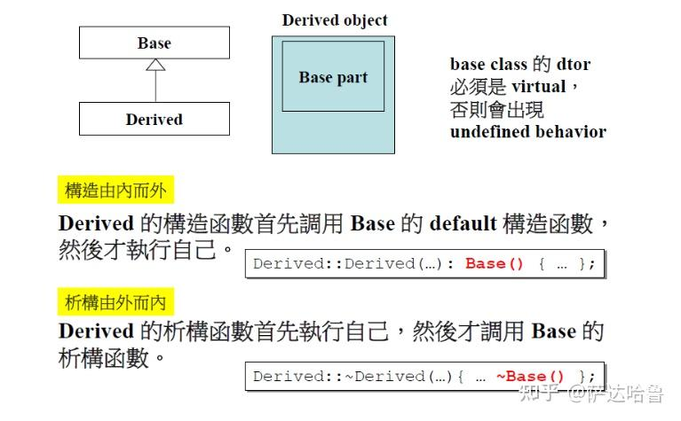

面向对象高级编程（上）¶
一. Class without pointer member(s) : complex类¶
1. 头文件的防卫式声明¶
作用：防止同一个头文件被同一个.cpp文件包含多次而导致的重定义错误。 有两种实现方法。
- 防卫三段式
#ifndef __COMPLEX__
#define __COMPLEX__
... ... // 声明、定义语句
#endif
特点：
- 标准做法，与平台和编译器无关
- 可针对文件，也可针对代码片段。
- 编译慢，有宏命名冲突的风险。
- #pragma once
#pragma once
... // 声明、定义语句
特点：
- 老的编译器可能不支持
- 只能针对文件
- 编译快，无宏命名冲突的风险。
Warning
防卫式声明只能保证同一个头文件不会在同一个编译单元(source.cpp)中被重复展开，可保护不了你在多个编译单元中(source1.cpp source2.cpp ...)重复定义相同的符号。
即使某个头文件进行了防卫式声明，但定义了（不止声明）变量或者函数，那么包含相同头文件的source1.cpp source2.cpp 可以成功编译成 source1.o source2.o。 但在链接的时候则会出现重复定义错误
防的是一个头文件在同一个文件里被多次include。
非 inline 非模板 的函数和变量在头文件中只能有定义。
一般而言，C 的头文件里只能放这些东西：
struct/union 的声明
typedef 声明
函数声明
extern 变量声明
const 常量定义
绝对不可以在头文件中：
给出函数实现
定义变量
否则链接错误教你做人。
需要注意 inline 函数可以写到头文件头。inline 函数直接将函数实现插到调用位置，无需进行指针跳转。
模板差不多必须写到头文件中（原理类似inline）。
2. 初始化列表¶
类成员在构造函数中使用初始化列表初始化
class complex{
public:
complex(double a) : m_a(a) {}
private:
double m_a;
}
类的成员变量在初始化时经历两个阶段，初始化和赋值。初始化列表可以让成员变量在初始化的时候赋值， 省去后面赋值阶段，节省效率。
Question
编译器直接把构造函数的赋值优化到初始化阶段不就好了？
3. 参数传递¶
参数传递有三种方式：
- pass by value
- pass by reference
- pass by reference to const (推荐！)
设计类成员函数时，要提前考虑好那些函数的数据会改变，如果不改变请加上const。
一般来说 pass by reference 总是好于 pass by value 。因为pass by reference传递到函数栈的是指针(4/ 8 Byte). 而pass by value 往往比较大。当然，如果是 char 或者 short 等小于 4 Byte的使用值传递更好。64位下int float 也是值传递更好。
对于内置的数据类型，在64位下使用值传递就够了。
4. 函数返回值¶
返回值传递的时候，如果可以，建议使用return by reference。
简单来说，如果返回值是局部变量，只能使用值传递，返回一个copy副本。
那什么时候不能return by reference 呢？
首先考虑，如果一个函数操作得到一个结果B，那该结果放到什么位置上呢？
- 情况一：在该函数区域，创建一个新的变量i，将B传给它。（不能return by reference）
- 情况二：将结果B传递给该函数已存在的一个变量。 （可以return by reference）
对情况一，此时return i的话，返回的是创建的新变量i，但请记住，i是一个局部变量，它的生命周期仅在创建它的函数中。此时如果return by reference的话就会报错！
对情况二则没有此限制，比如保存到class中默认的this 指针。
inline complex& //可以return by reference
__doapl(complex* ths, const complex& r){
ths->re += r.re; //ths是一个已存在的变量
ths->im += r.im;
return *ths;
}
inline complex&
complex::operator += (const complex& r)
{
return __doapl (this, r);
}
// this指针是类的实例对象指针，编译器会默认添加到成员函数中。
// 注意类的静态函数不存在。类似python的self
5. const 常量成员函数¶
函数体后的const能加就加
常量对象只能调用 const修饰的 常量成员函数。
class complex
{
public:
complex (double r = 0, double i = 0): re (r), im (i) { }
double real () const { return re; }
double imag () const { return im; }
private:
double re, im;
};
如果类的成员函数不修改类的任何非静态数据成员， 则需要在函数体后面加上 const .
这样做的目的是为了确保常量对象（即被声明为 const 的对象）可以调用该函数，并且该函数不会修改对象的状态。
在常量成员函数内部，如果有任何试图修改成员变量的操作，编译器会发出错误信息。这确保了常量对象调用常量成员函数时，不会意外地修改对象的状态。
例如，如果有一个 const complex c; 的常量对象 c，那么只有常量成员函数才能被调用，因为它们不会修改对象的状态。
二. Class with pointer member(s) : string类¶
string类，内含指针，指针指向堆(heap)上分配的内存。
1. Big three¶
带指针的类需要实现三个特殊函数: 拷贝构造、拷贝赋值、析构 ，俗称 big three.
必须实现 析构函数, 编译器默认的实现不会释放指针指向的内存，这会导致内存泄露。
必须实现拷贝构造和拷贝赋值，否则使用编译器默认的实现，直接复制指针，导致指针指向同一片内存，就会造成浅拷贝。为了避免浅拷贝，所以要把指针所指的内容也要拷贝过来，这叫深拷贝。
class String {
public:
String(const char* cstr = 0);
// big three
String(const String& str);
String& operator=(const String& str); // 返回 this 的 ref
~String();
char* get_c_str() const { return m_data; }
private:
char* m_data;
};
析构函数¶
拷贝构造¶
拷贝赋值¶
拷贝赋值的经典四步曲
以s1 = s2为例(s1、s2是两个字符串)：
第一步：检测自我赋值。（否则有可能导致未定义情况, 这一步是必须的）
第二步：清理掉s1的数据。
第三步：为s1分配一块与s2一样大的内存空间
第四步：将s2拷贝到s1中。
inline String& String::operator =(const String& str)
{
// 如果不判断，将直接清空自身的内容，指针成为野指针，会发生undefined behavior
if (this == &str)
return *this;
delete[] m_data;
m_data = new char[strlen(str.m_data) + 1];
strcpy(m_data, str.m_data);
return *this;
}
2. 堆栈 (stack heap)¶
Stack(栈) 是存在于某作用域 (scope) 的一块內存空间(memory space)。例如当你调用函数，函数本身即会形成一个stack 用來放置它所接收的参数，以及返回地址。 在函数本体 (function body) 內声明的任何变量，其所使用的內存块都取自上述 stack。
heap(堆) 或谓 system heap，是指由操作系统提供的一块 global 內存空间，程序可动态分配 (dynamic allocated) 从某中获得若干区块(blocks)。
栈上的内存出了作用域就会自动被释放，而堆上的内存没有被主动释放则一直持续到程序结束。
malloc 申请的内存都在堆上。
3. static¶
使用 static 修饰的局部变量不会存储在栈上，也不会存储在堆上。它们通常存储在静态存储区（静态内存）中。
静态存储区是程序运行时分配的一块内存区域，其生命周期贯穿整个程序的执行过程，直到程序终止。这部分内存中存储的数据不会在函数的调用和返回之间销毁，因此被称为静态存储期（static storage duration）。
与之相对的，栈上的变量是在函数调用时动态分配的，当函数执行结束时会自动销毁；而堆上的变量是在运行时手动分配和释放的，其生命周期由程序员控制。
4. new delete¶
new: 先分配内存，再调用构造函数

delete: 先调用析构函数，在释放内存

5. memory block in VC¶
建议看视频。

- 内存块需要16bit(0x10)对齐，所以最后一位拿来做标注位， 1表示在使用，0表示被收回。
- array new 一定要搭配 array delete
delete 和 delete[] 都会将其所指的内存块全部释放
区别在于delete[]会对数组内的每一个元素调用析构函数 而delete只对第一个元素调用
如果数组元素为带有指针成员的类，使用delete会造成memory leak。
6. 拓展补充¶
- 静态成员函数只能操作静态数据。
- 静态成员函数没有this指针。
- 静态数据一定要在类外进行定义。
- 调用静态函数的方法有两种：（1）通过对象调用；（2）通过类名调用。
- 一个函数中static的东西，只有当该静态的东西被调用的时候，它才会被创建，且离开该函数作用域后它依然存在。
三. OOD:object oriented design-relationships between classes: 类间关系¶
类间关系主要掌握三种情况足够。更多的则是涉及到设计模式的内容。
- Inheritance (继承) —— is-a
- Composition (复合) —— has-a
- Delegation (委托) or Composition by reference(带引用的复合)
1. Composition (复合)¶
（1）Adapter(改造)：A类若复合B类，如果有需要，则A类可以使用B类中的东西进行改造。
（2）一个复合类的大小 = 该类数据大小 + 该类中复合类的大小
（3）Composition复合关系下的构造和析构

（4）在复合中，类和其复合的类是同时创建的。
2. Delegation(委托, Composition by reference)¶
通俗的讲，委托就是我拜托/委托别的类，来帮助我实现一些东西。我只创建一个指针，指向我委托的那个类，让我的功能，都在我委托的那个类中实现。
委托其实和复合的功能很像，其实这就是对不同的实现分配到不同术语，你只需简单的记住，A类内含一个指针指向另一个类B(该类中实现了A的功能)就可以称作委托。
还有一点要注意，委托和复合他们中的类创建的时间不一样：在复合中，类和其复合的类是同时创建的；而在委托中，委托的那个类创建的时间我不清楚，反正一定比A类晚，即不同步创建。
Handle/Body（pimpl）手法，其实就是一种委托，在Handle中创建一个指针作为接口指向另一个类Body，在Body中实现Handle的功能。
P.S. 委托中使用指针，可以使用子类。
3. Inheritance (继承)¶
不同于其他语言，C++中的继承除了public继承外，还有private、protect继承，其中public最重要，用的最多。
Inheritance继承关系下的构造和析构，其实和复合关系下的构造和析构很像：

最后：虚函数与多态、委托相关设计
- non-virtual 函数：你不希望derived class 重新定义(override, 覆写) 它.
- virtual 函数：你希望derived class 重新定义(override, 覆写) 它，且你對它已有默认定义。
- pure virtual 函数：你希望derived class 一定要重新定义(override 覆写) 它，你对它沒有默认定义。
子类实现了父类的非虚函数会怎样？这种情况下，子类中的函数会完全覆盖父类中的函数，而且不管父类函数是否被声明为 virtual。
class A
{
public:
void print()
{
cout << "Hello A" << endl;
}
};
class subA : public A
{
public:
void print()
{
cout << "Hello subA" << endl;
}
};
int main()
{
A* a = new subA;
subA* b = new subA;
a->print(); // "Hello A", A::print()
b->print(); // "Hello subA", subA::print()
delete a;
delete b;
return 0;
}
如果父类成员函数未声明为虚函数，则调用左边声明的类型的对应函数。
class A
{
public:
virtual void print()
{
cout << "Hello A" << endl;
}
};
class subA : public A
{
public:
void print() override
{
cout << "Hello subA" << endl;
}
};
int main()
{
A* a = new subA;
subA* b = new subA;
a->print(); // "Hello subA", subA::print()
b->print(); // "Hello subA", subA::print()
delete a;
delete b;
return 0;
}
如果父类成员函数声明为虚函数，则调用右边实际new出来的类型的对应函数。